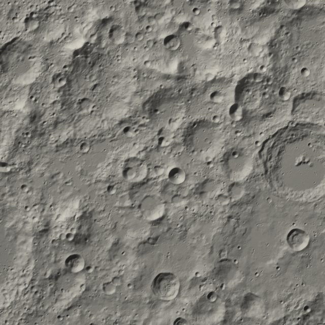

Pick a place on the Moon and a landing date. See if the lander makes it.
A lander runs on sunlight. At the Moon's south pole the Sun sits so low that hills hide it for days. If the battery runs out before the Sun comes back, the lander is lost.
More settings

Toward Earth South PoleHow do we save it?
How sure is this answer?
We run the same mission again with some bad luck added: less sunlight (our map is a little generous compared with NASA's), weaker solar panels, a lander that uses more power, and a battery that is not full at landing. First one at a time, then all together. These are what-ifs, not odds.
Each square is one version of the mission. The outlined square is the answer above. The number shows how low the battery got, or the day it ran out.
Why? Watch the mission.
This is the real ground of the place you picked, with the lander on it. Press Play and watch the Sun skim the horizon. When a ridge or crater wall hides it, the lander falls into shadow and runs on battery. Look around, or zoom out to see the craters and ridges that get in the way.
Drag across the battery chart to move through the mission. In the 3D view: drag to look around, right-drag to move, Ctrl + scroll (or pinch, or + and −) to zoom. A yellow line runs from the lander to the Sun; when something is in the way it turns red and marks the ridge. Ground shapes come from NASA's height map (LOLA): 80 m detail for 26 km around the lander, coarser beyond. The fine grain of the soil, and the lander, are illustrative. The Sun and Earth are drawn 3× larger so you can see them; the Earth picture is NASA's Blue Marble.
Flat 360° view of the horizon
Can it do science too?
Give the lander jobs to do and see if the battery can afford them. Pick a job, then tap the chart to choose when it happens. Each job can be done once.
Our own examples. The jobs and the power they need are made up for this demo. They are not figures from a real instrument.
Drag a job to move it. Click it to remove it. With a keyboard: on a job, the arrow keys move it by one hour and Delete removes it; on the chart, the arrow keys pick an hour and Enter adds the job.
Solid line: battery with the jobsDashed line: battery without themRed cross: job failedRed stripes: lander lost
0 / 4 jobs done
Loading the mission.
What if we land a few days later?
Each square is the same mission, landing one day later. Tap one to try it.
Which hill hid the Sun?
Pick one of the longest dark periods above, or open the flat 360° view above and tap it to look in any direction.
How does another place compare?
Compare with
Same landing date, same lander, two places. The dashed line is the second place.
Which place is safest?
lander survives survives, but battery drops below 25% lander is lost
Every stripe is one landing date, from January 2027 to December 2028. Tap anywhere to load that place and date.
The numbers, hour by hour.
Check each day of your mission or download every hour.
| Date (UTC) | Sun (hours) | Earth in view (hours) | Battery at day end (%) | Lowest battery (%) |
|---|
Sun hours add up the visible fraction of the Sun’s disc. Both in view means any Sun and Earth’s centre above the hills. Earth in view means line of sight only. Battery values are from a simple model, not mission-grade data. The CSV gives battery charge at the end of each hour.
Can Mauritius see it?
Want to dig deeper?
The mission planner view adds the detail an engineer would ask for.
- What if things go wrong? The same mission with less Sun, weaker panels and a weaker battery.
- Which hill blocked the Sun? A side view of the hill that got in the way.
- Jobs for the lander. Drill, take photos, send results home, and see what the battery can afford.
- Two places side by side. Same date, same lander, two landing places.
- Every date for two years. Safe and unsafe landing dates for all six places.
How this works, and what it does not do
Where the numbers come from
- The hills. NASA's height map of the Moon's south pole, measured by the laser altimeter (LOLA) on the Lunar Reconnaissance Orbiter. Product LDEM_80S_80M, 80 metres per pixel, from the NASA PDS Geosciences Node. From each place we look out in 720 directions, up to 200 km, and keep the highest hill in each direction. The Moon's curve is included.
- The Sun and Earth. NASA/JPL Horizons gives their direction in the sky of each place for every hour of 2027 and 2028.
- The places. Six candidate landing sites published by Wueller et al. (2026, JGR Planets), inside regions NASA has named as candidates for Artemis landings.
- Mauritius. NASA/JPL Horizons again: the hours when the Moon is at least 10 degrees above the horizon at Port Louis.
- Your own place ("Somewhere else"). Worked out in your browser, with the same method. The page loads NASA's 80 m height map for the ground within about 18 km and a 640 m copy for hills further away. The Sun and Earth are taken from the nearest prepared place's NASA/JPL Horizons table and turned to your place's sky. We tested it by rebuilding each of the six prepared places this way: the hill line stayed within 0.24 degrees, the Sun and Earth within 0.02 degrees, and the answer (survived or lost) matched on 97 to 100 percent of landing days. It works south of 85 degrees. The first time you choose a new area it needs the internet.
How close are we to NASA's own maps?
NASA Goddard publishes maps of how often the Sun and the Earth are visible at the south pole (Mazarico et al. 2011, averaged over 18.6 years). We compared them with our numbers for 2027 and 2028 at the six places.
- Earth in view: with the panel at 2 m we agree within 3 points at every place (average difference under 2).
- Sunlight: we are higher than NASA at every place: by 6 points on average with the panel at 0.5 m, and 11 points at 2 m. The largest gap is at Nobile Rim 1 (about 20 points).
- What that means: our sunlight is on the generous side, so a "Survived" by a small margin deserves caution. A "Lost" is the safer signal. Panel height changes the answer a lot on ridge tops, which is where an 80 m map is weakest. Use the panel height setting to see it.
The battery is a simple model
- The lander uses one unit of energy per hour, all the time.
- In full Sun its panels make three units per hour. If hills cover part of the Sun, they make that share of it. The panels are assumed to follow the Sun.
- The battery starts full. If it reaches empty, the lander is counted as lost.
- No heat, cold, dust or ageing is included. Real landers are more complicated.
What this tool does not do
- "Earth in view" means a clear line of sight. It is not a guaranteed radio link.
- The height map has 80 m pixels, so rocks and small ridges are not seen. The panel can be set to 0.5, 2 or 10 m above the ground.
- The map ends at 80 degrees south. Hills further north are not included.
- It does not judge slopes, landing hazards or science value.
- It is a fast first look for planners, teachers and the public. It does not replace NASA's mission tools. This is a NASA Space Apps Challenge 2026 project and is not a NASA product.
Built with AI assistance (Claude) for code and text. Fonts: Archivo and JetBrains Mono, SIL Open Font License. 3D: three.js r147, MIT License.